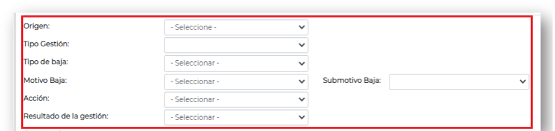
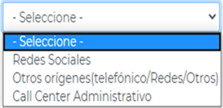
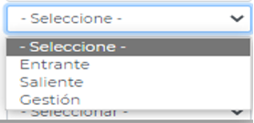
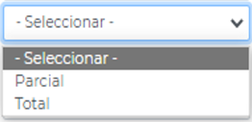

Está lista desplegable del origen de la solicitud, tendrá el valor WEB por defecto cuando la gestión se haya iniciado por una solicitud de baja cargada desde el portal. En caso de que el origen de la gestión no sea por una solicitud de baja cargada por el portal web, se deberá seleccionar la opción que corresponda.

Registrar si corresponde a una llamada Entrante, Saliente o si corresponde al seguimiento de una Gestión.

Si el cliente solicita la baja de alguno de los servicios contratados dejando alguno activo, se considera BAJA PARCIAL. Si el cliente solicita la baja de todos los servicios contratados se considera BAJA TOTAL.